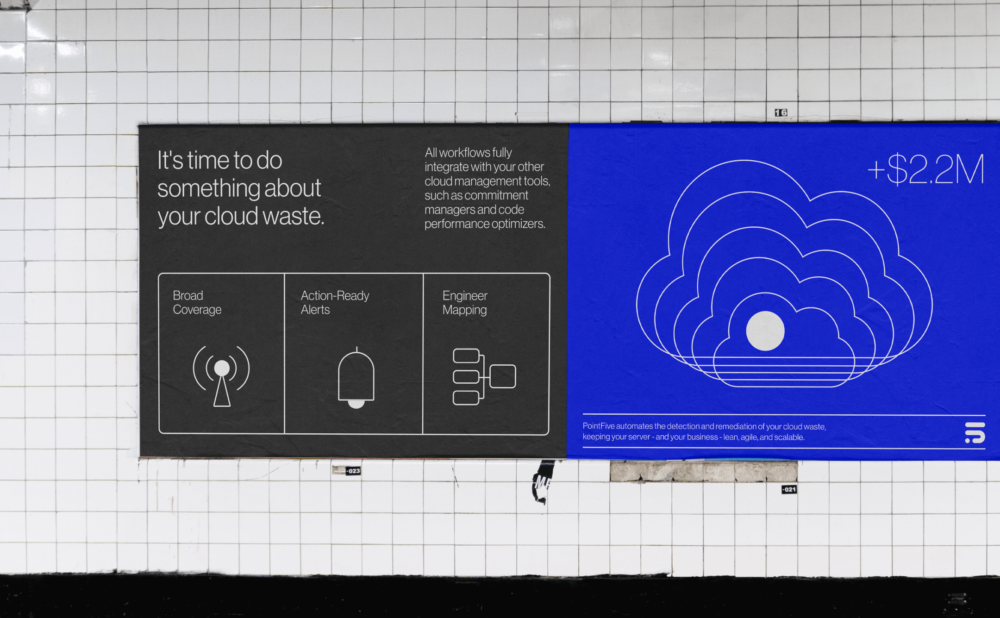
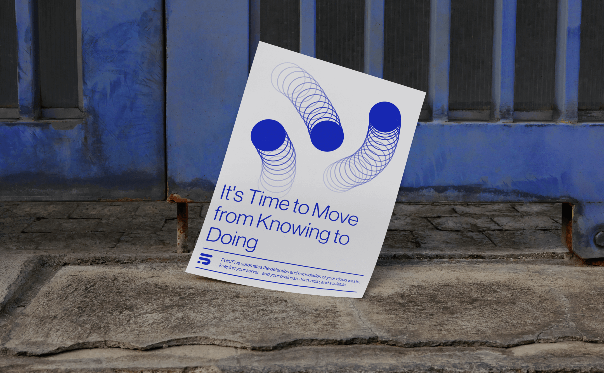
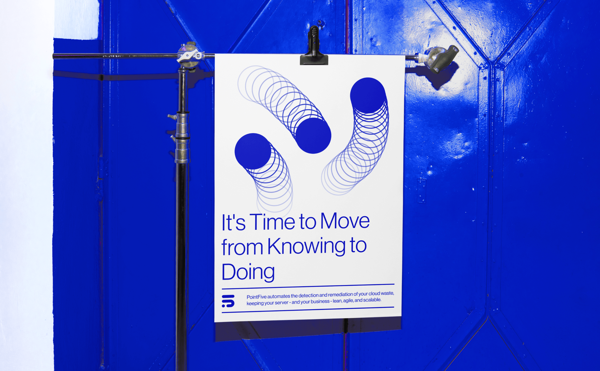
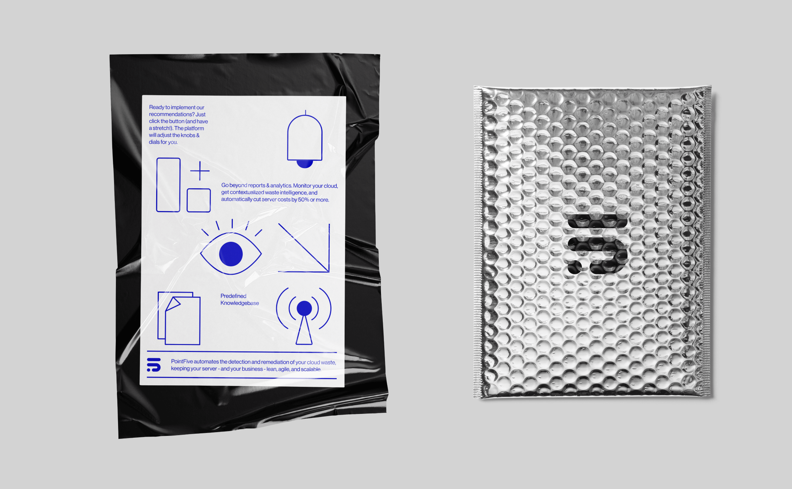
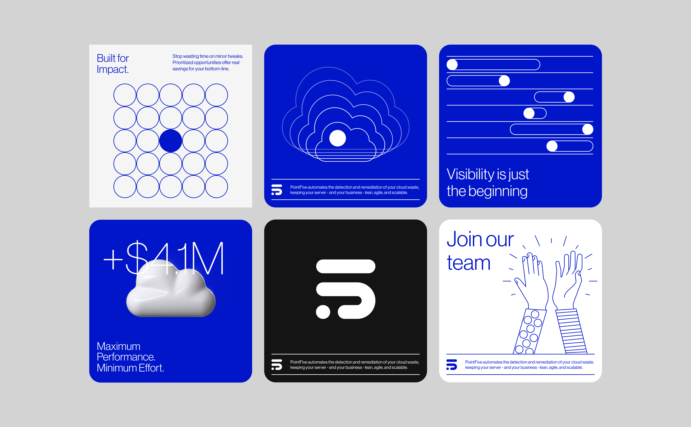
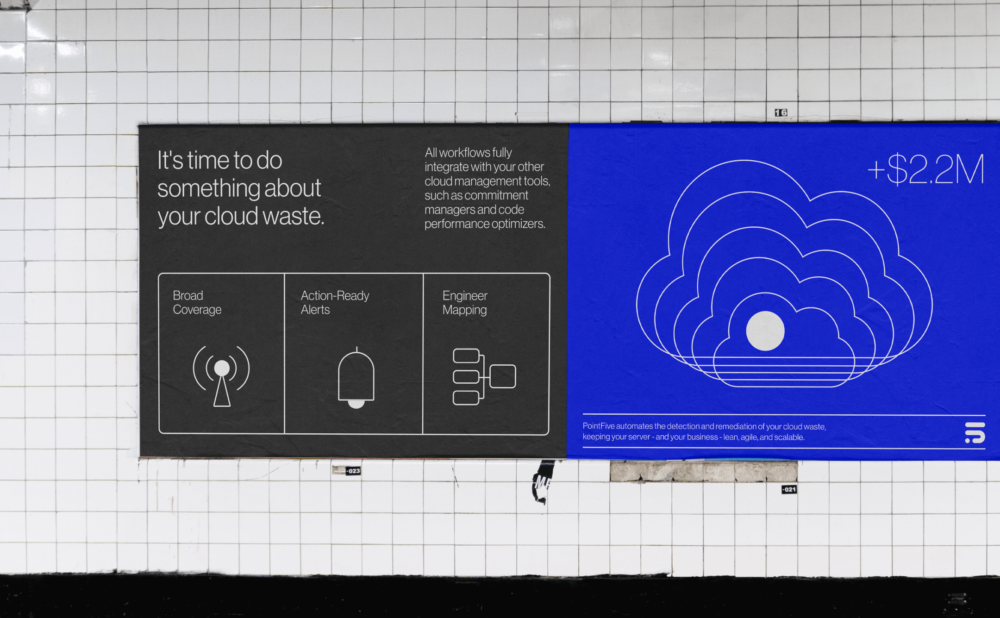
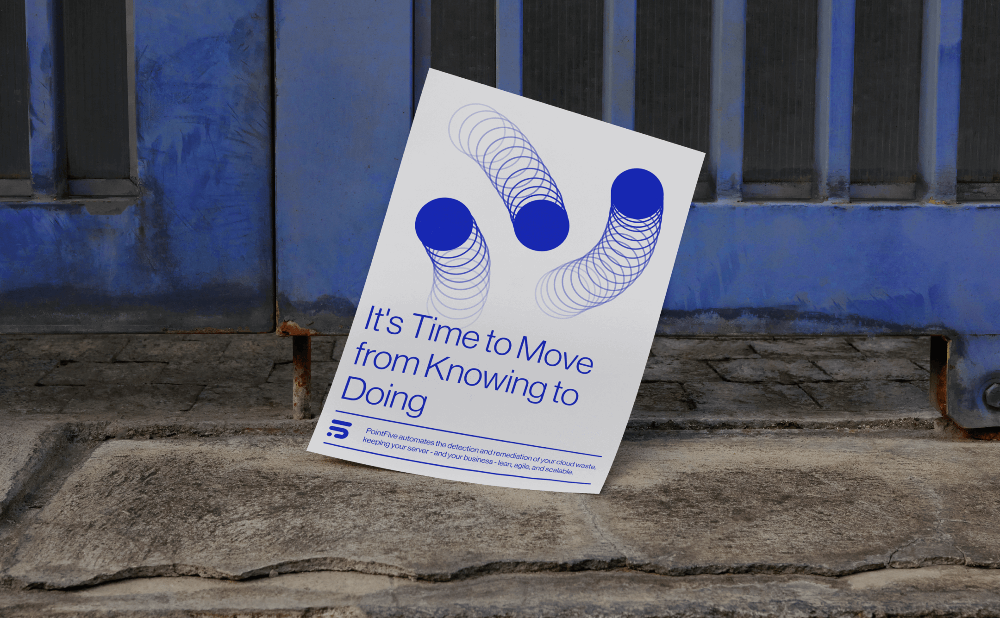
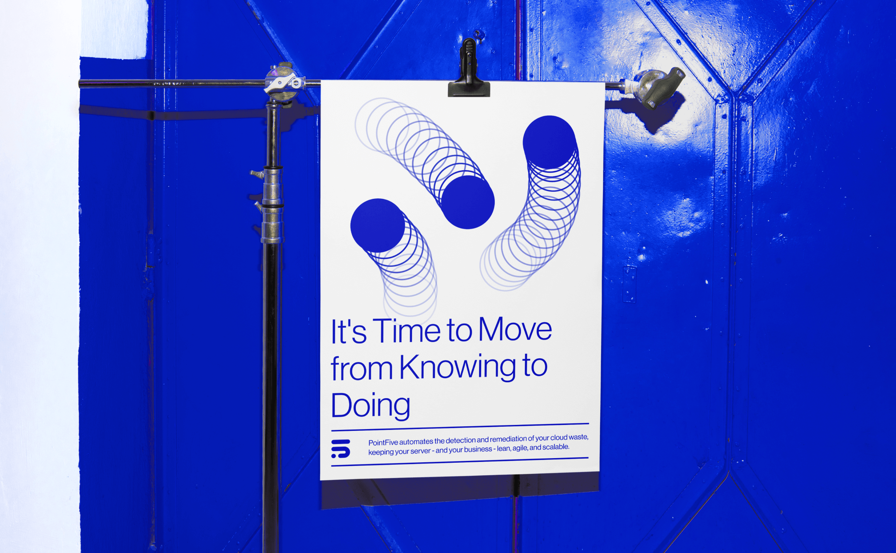
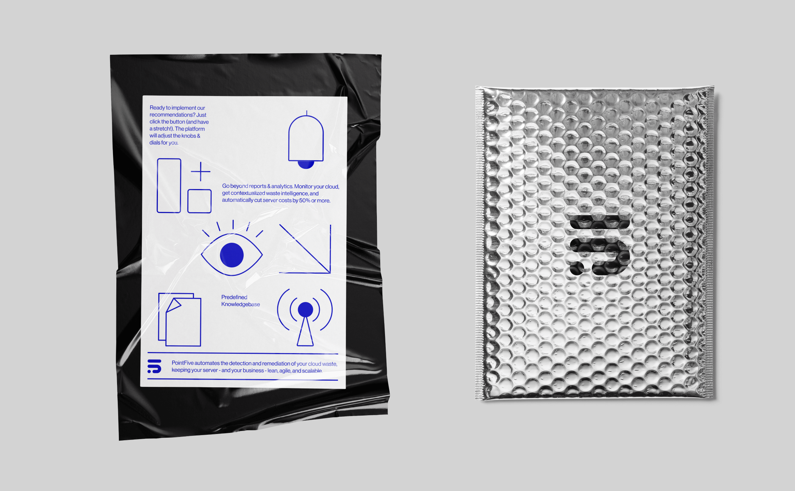
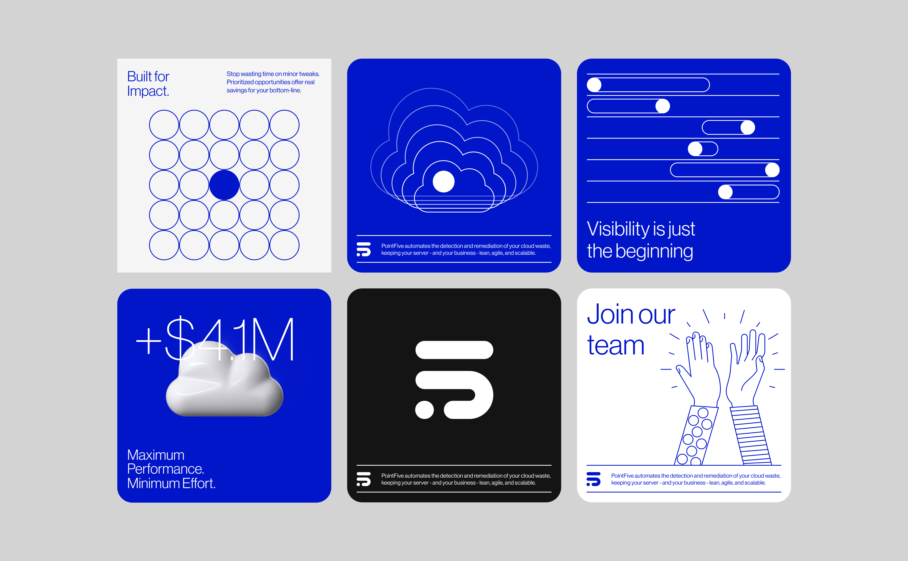

A 10-day brand sprint for PointFive
imagine this: you're running a biz, doing your thing, and bam, cloud bills hit like a ton of bricks. you're lost
in a jungle of services, not sure what’s useful, what's just wasting your dough.
they swoop in, not just with data but with action. think real-time insights, kick-ass tech that spots waste before
it stings. and here's the kicker—they link you up with the right geeks who fix it, fast. no more crying over cloud
bills.
our challenge? communicate a complex concept in a lightweight, approachable manner. we took inspiration from the
sky, choosing a blue color palette to represent the cloud-centric approach. we designed the logo as a big, fluffy
cloud morphing into a tight, streamlined one. like turning chaos into clarity, big to just right.
Client |
PointFive
Creative Director | Eden Vidal, Inbal Lapidot Vidal
Brand Designer | Kate Holub
3D Animation | Ziv Finkel
2D Animation | Abdullah
 








